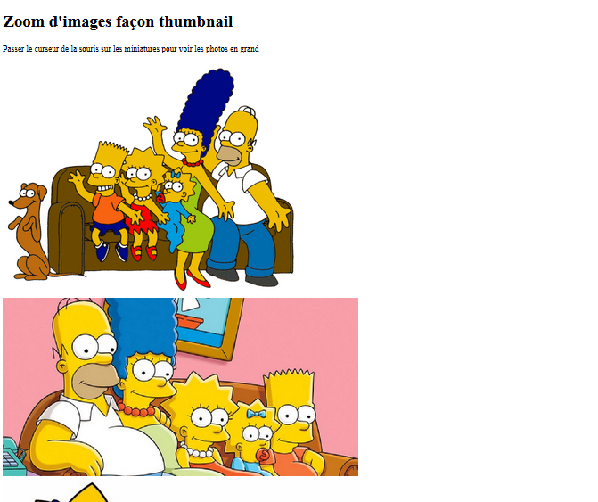
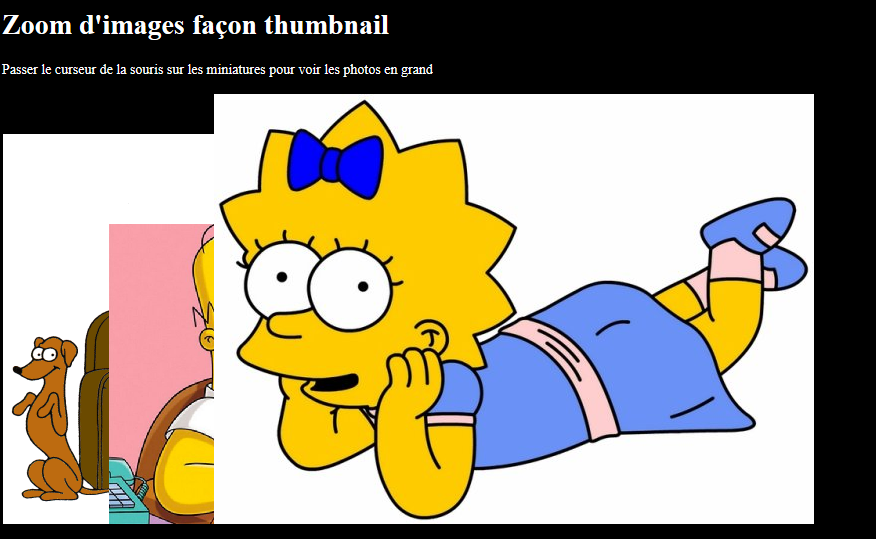
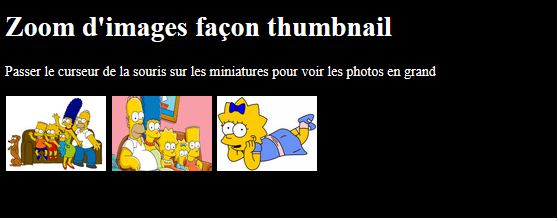
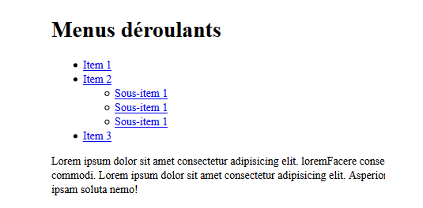
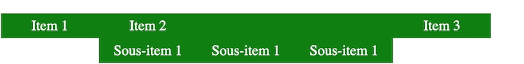
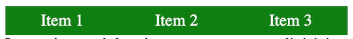
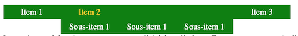

Séance 5 : Exercices
Compétences à acquérir lors de la séance 5 :
Cette séance vise à vous faire travailler sur les compétences acquises lors des dernières séances
- Savoir créer des sélecteurs optimisés
- Connaitre les règles de positionnement dans le flux
Exercice 1
En vous inspirant de l’image ci-dessous, créez un fichier HTML contenant un titre, une phrase et affichant 3 images. Chaque image devra correspondre à une balise div qui, pour le moment, ne sera affectée à aucune classe de style.

En vous inspirant de l’image ci-dessous, écrivez le CSS répondant aux contraintes suivantes :
- Le body de la page a un fond noir, un texte de couleur blanche, et une hauteur de 500 pixels
- Les images n'ont pas de bordure
La classe thumb permettra de gérer l’affichage en mode vignette. Une image sera intégrée dans une div de classe thumb. Cette div aura un mode d’affichage de type inline block, une marge de 1px une largeur de 100px et une hauteur de 75px. Une fois ces attributs créés, affectez aux 3 divisions la classe thumb. L’image ci-dessous illustre le résultat que vous devez obtenir :

Les caractéristiques décrites dans thumb ne s’appliquent pas aux images (mais uniquement à la division). Modifiez le CSS afin qu’une balise img contenue dans une div de classe thumb ait les caractéristiques suivantes :
- marge à 0
- padding à 0
- une largeur fixe de 100px
- une hauteur fixe de 75px
Une fois les modifications réalisées, votre page doit ressembler à l’image ci-dessous :

Afin de permettre l’affichage “en grand” de l’image vignette lorsque la souris passe dessus,
- modifiez la classe thumb pour que la souris s’affiche sous forme de pointeur,
- Lorsque la souris est sur l’une des div, décalez l’image vers le bas de la bonne hauteur et fixez la largeur à 300px et la hauteur à 225px.
Petit problème : Les images s’affichent en dessous mais les vignettes se décalent vers le bas.
Utilisez la propriété vertical-align utilisable sur les inline-block pour aligner en haut les vignettes. Vous devez obtenir l’affichage suivant :
Exercice 2
Dans cet exercice, vous allez créer un menu déroulant. La première étape consiste à créer :
- Une zone de navigation à laquelle vous donnerez l’identifiant menu,
- Une liste d’items en utilisant les balises ul, li.
Le rendu final correspond à celui de la vidéo ci-dessous
Créer le code html permettant d'obtenir le résultat suivant :

- Identifiez les sélecteurs permettant d’obtenir le résultat désiré
- Utilisez les outils de développement de votre navigateur pour modifier les propriétés des attributs (margin, padding, text-decoration, ...) et observez les modifications.
/* ul pricipal de la zone menu */ #_____ _____ { margin: 0; padding: 0; list-style-type: none; text-align: center; } /* style de tous les li de la zone menu */ #_____ _____ { float:left; margin: auto; padding: 0; background-color: green; } /* style de tous les liens dans un li contenu dans la zone menu */ #_____ _____ _____ { display: block; width: 100px; color: white; text-decoration: none; padding: 5px; } /* style de tous les liens survolés dans un li contenu dans la zone menu */ #_____ _____ _____ { color: #FFD700; } /* arrêt écoulement autour des float pour le bloc qui suit */ _____ { clear: both; }

A ce stade, le sous menu est constamment affiché (alors qu’on le souhaite déroulant). La première étape consiste à faire disparaître, par défaut, ce sous menu.
Pour cela il faut initialiser à une valeur précise de l’attribut display. Complétez le code suivant afin de parvenir à l’affichage désiré./* sous menu non affiché par défaut*/ # _____ _____ _____ { display: _____ ; }

Pour afficher le sous menu au passage de la souris, il faut utiliser la pseudo-classe :hover. Complétez le code suivant afin de parvenir à l’affichage désiré.
/* affichage du sous menu au survol*/ #_____ li:_____ _____ { display: _____ ; }

Le sous-menu s’affiche de manière horizontale, alors que l’on souhaite un affichage vertical. Pour cela, il faut utiliser la propriété float. Complétez le code suivant afin de parvenir à l’affichage désiré.
/* affichage vertical du sous menu */ # _____ _____ _____ _____ { float: _____ ; }
Powered by w3.css